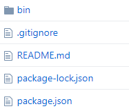

github 地址：https://github.com/Demian1996/translate
介绍
命令行工具 translate，给定中文字典，生成 google 翻译后的多语言文件
1 | translate -f zh-CN.json -l en/ja |
通过该命令生成多语言文件
模块依赖
- 命令行工具
commander - 请求库
request - 函数库
ramda
开发
目录总览

bin 是业务逻辑处理文件
package.json 配置依赖
命令
首先在package.json的文件中配置bin，指定文件路径和对应的命令名:
1 | "bin": { |
然后在 bin 文件夹下新建入口文件 index.js，在文件首行配置
1 |
这一行是指定使用 node 执行脚本文件
然后执行命令npm link，就可以全局使用 translate 命令了。
参数解析
使用模块 Commander 解析命令行参数：
1 | commander.option('-f --file <filename>', 'translate file', callback); |
通过-f指定中文字典文件，通过-l指定目标语言，默认翻译为英文。callback主要是判断文件是否存在若不存在则返回 null，存在则返回 json 对象。后续可以通过 commander.file 获取 json 对象。
流程处理
业务逻辑如下：
1 | const generateDictionary = R.pipe(getLanguageArray, fetchTranslateApi, mapTranslation, generateFile); |
即获取目标语言数组->爬取 google 翻译 api->从返回值中筛选出翻译值->生成目标语言的 json 文件。
详细流程见源码